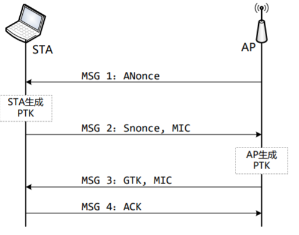

无线网络术语简介
- 无线媒介（Wireless Medium）
传输无线MAC帧的媒介，主要包括射频和红外两种，目前主要指射频 - STA(Station)
具有无线网卡的设备，比如：笔记本电脑、智能手机等 - AP(Access Point)
无线接入点，能为已经关联的STA提供DS服务 - DS（Distributed System）
一种用于将一组基本服务集（BSS）和集成局域网（LAN）互连以创建扩展服务集（ESS）的系统。 - SS （Service set），服务集
服务集是一组使用相同网络参数运行的无线网络设备。 - BSS(Basic Service Set)，基本服务集
基本服务集是具有相同介质访问特性（即射频、调制方案等）的设备单元，
包括: Independent BSS和Infrastructure - BSSIndependent BSS
简称IBSS，联网无需AP参与，又称为ad-hoc BSS或者自组网络。 - Infrastructure BSS
一般来说，BSS就是指Infrastructure BSS，需要AP参与来构建网络。
WLAN工作原理
概述
- AP周期性发送Beacon帧，用于宣布其网络的存在和网络参数
- STA发送Probe Request帧主动探测某个AP
- STA发送认证请求，AP回复认证响应
- 如果通过认证，STA发送关联请求，AP回复关联响应，实现STA和AP的关联
- STA和AP之间传输数据帧
基础数据帧格式
WLAN由 IEEE 802.11定义，规范了MAC子层和PHY层。MAC子层体现为帧，因此需要了解802.11的帧格式
- MAC Header：包括帧控制（Frame Control）、时长（Duration）、地址（Address）等
- Frame Body：代表数据域。这部分内容的长度可变，其具体存储的内容由帧类型（type）和子类型（subtype）决定
- FCS：（Frame Check Sequence，帧校验序列）用于保障帧数据的完整性

如果是QoS（Quality of Service）数据帧，还需要附加QoS Control字段。
如果是HT（High Throughput，一种用于提高无线网络传输速率的技术）数据帧，还需要附加HT Control字段。
下面详细介绍报文中的字段
Frame Control字段

Protocol Version：代表802.11 MAC的版本号。目前的值是0。
Type和Subtype：这两个字段用于指明MAC帧的类型。802.11中MAC帧可划分为三种类型，分别是control、data和management，每种类型的帧用于完成不同功能。具体如下图：
To DS和From DS：只用在数据类型的帧中。
More Fragments：表明数据是否分片。只支持data和management帧类型。
Retry：如果该值为1，表明是重传包。
Power Management：表明发送该帧的STA处于活跃模式还是处于省电模式。
More Data：和省电模式有关。AP会为那些处于省电模式下的STA缓冲一些数据帧，而STA会定时查询是否有数据要接收。该参数表示AP中还有缓冲的数据帧。如果该值为0，表明STA已经接收完数据帧了。
Protected Frame：表明数据是否加密。
Order：指明接收端必须按顺序处理该帧。地址域
MAC帧头中包含四种地址类型：- Destination Address（DA）：用来描述MAC数据帧最终接收者（final recipient），可以是单播或组播地址。
- Source Address（SA）：用来描述最初发出MAC数据帧的STA地址。一般情况下都是单播地址。
- Transmitter Address（TA）：用于描述将MAC数据帧发送到无线媒介的实体的地址，可以是STA或者AP。
- Receiver Address（RA）：用于描述接收MAC数据帧的接收者地址，可以是STA或者AP。
MAC帧头中包含四个地址域，其用法与FrameControl域中To/From DS flags相关：
To DS From DS 含义 0 0 在同一IBSS中，从一个STA发给另一个STA的数据帧、管理帧或者控制帧 0 1 从一个DS出去的数据帧（AP向STA传递） 1 0 发往一个DS的数据帧（STA向AP传递） 1 1 从一个AP发往另一个AP的无线分布式系统帧（无线桥接模式） 原则是Address 1表示Receiver Address (RA)，Address 2表示 Transmitter Address（ TA），是发送器的地址，Address 3辅助用于接收器用来过滤的， Address 4用于无线桥接或Mesh BSS网络中。
下面给出相应的地址域用法：To DS From DS Address 1 Address 2 Address 3 Address 4 0 0 RA=DA TA=SA BSSID 0 1 RA=DA TA=BSSID SA 1 0 RA=BSSID TA=SA DA 1 1 RA TA DA SA 看了上面两张表，肯定还是懵逼的。下面来看3个例子。好好体会SA、TA、DA和RA具体所指的意思。理解生成数据包和发送到无线媒介两个不同的地址区别，接收数据包和数据包目的地两个不同的地址区别。


还没懂吗？那就多看几遍，SA生成，TA发送，RA接收，DA处理。一般来说都有重合，所以Address4只有最后一种情况会被使用。Sequence Control
Sequence Control域长16位，前4位表示分片编号FN，后12位为帧顺序编号SN
Fragment Number：用于控制分片帧。如果数据量过大，则MAC层会将其分片发送。每个分片帧都有对应的分片编号。
Sequence Number：STA每次发送数据帧时都会设置一个帧顺序编号，控制帧没有帧顺序编号，重传帧不使用新的帧顺序编号。
控制帧
Frame Control的Type字段区分了802.11中三种帧类型，分别是控制帧、管理帧和数据帧。
控制帧得名于媒体访问控制（ Media AccessControl, MAC），用来控制对通信媒体的访问。控制帧通常与数据帧搭配使用，负责区域的清空、信道的取得以及载波监听的维护，并于收到数据时予以的应答，借此促进工作站间数据传输的可靠性。
下面介绍四种控制帧，其功能各不相同。
RTS（Request To Send）
RTS用于申请无线媒介的使用时间，值为Duration，单位为微秒。其数据帧格式如下图所示（替代之前介绍的数据帧格式）
CTS（Clear To Send）
用于回复RTS帧。另外它被802.11g保护机制用来避免干扰旧的STA。其数据帧格式与ACK相同。
ACK
802.11中，MAC以及任何数据的传输都需要得到确认。这些数据包括普通的数据传输、RTS/CTS交换之前帧以及分片帧。
PS-POLL
该控制帧被STA用于从AP中获取因省电模式而缓存的数据。当一部移动工作站从省电模式中苏醒，便会发送一个 PS-Poll 帧给基站，以取得任何暂存帧。其中AID的值是STA和AP关联时，由AP赋给该STA的。
管理帧
管理帧用于管理无线网络，如节点的加入和退出无线网络等。802.11规范里面共定义了15种管理帧，携带的信息很复杂，其中定长字段有42种，信息元素有120种。
管理帧包括MAC Header （6个字段），Frame Body和FCS，其中Frame Body携带具体的管理信息数据。
管理信息数据包括：
- 定长字段（Fixed Field）
- 信息元素（Information Element）
定长字段
- Authentication Algorithm Number：2个byte，用于说明认证过程中所使用的认证类型
- 0：代表开放系统身份认证（Open SystemAuthentication）。
- 1：代表共享密钥身份认证（Shared KeyAuthentication）。
- 2：代表快速BSS切换（Fast BSS Transition）。
- 3：代表SAE（Simultaneous Authentication ofEquals）。用于两个STA互相认证的方法，常用于Mesh BSS网络。
- 65535：代表厂商自定义算法。
- Beacon Interval field：该字段占2字节。每隔一段时间AP就会发出Beacon信号用来宣布无线网络的存在。该信号包含了BSS参数等重要信息。所以STA必须要监听Beacon信号。
- Beacon Interval field字段用来表示Beacon信号之间间隔的时间，其单位为Time Units（规范中缩写为TU。注意，一个TU为1024微秒。这里采用2作为基数进行计算）。一般该字段会设置为100个TU。
- Capability Information（性能信息）：该字段长2字节，一般通过Beacon帧、ProbeRequest和Response帧携带它。该字段用于宣告此网络具备何种功能。2字节中的每一位（共16位）都用来表示网络是否拥有某项功能
常用管理帧——Beacon帧
AP通过定时发送Beacon帧来声明某个无线网络，STA通过接收到的Beacon帧来感知当前存在的无线网络。Beacon帧就是某个无线网络的心跳帧，主要携带如下信息：Timestamp、Beacon Interval、Capability、SSID
802.11常用管理帧：Probe Request/Response帧
STA用Probe Request帧来搜索周围的无线网络，包括的信息： SSID 、 Supported Rates 、Extended Supported Rates。
AP收到Probe Request帧后，会以Probe Response 帧进行响应，该帧携带的信息和Beacon帧类似.
802.11常用管理帧：Association Request帧
当STA要关联某个AP时，发送AssociationRequest帧。该帧携带的主要信息如下：
- Capability：AP将检查该字段判断STA是否满足要求
- Listen Interval：AP将根据该值分配PS时所需的缓冲区
- SSID：AP将检查SSID是否为自己所在网络
- Supported Rates: AP将检查该字段是否满足要求
802.11常用管理帧：Association Response帧
针对Association Request帧，AP会回复一个Association Response帧来通知关联请求的处理结果，主要包括如下信息：
- Capability: AP设置的Capability
- Status Code: AP返回的关联请求处理结果
- AID：AP返回关联ID给STA
- Supported Rates: AP支持的传输速率
802.11常用管理帧：authentication帧
Authentication帧用于进行身份认证，主要包括如下信息：
- Authentication Algorithm Number: 认证算法类型
- Authentication Transaction Sequence Number: 认证过程可能需要好几次帧交换，所以每个帧都有自己的编号
- Status Code: 有些类型的认证会使用该值返回结果
- Challenge Text: 有些类型的认证会使用该字段
数据帧
用来携带上层协议数据（如IP数据包），负责在工作站之间传输数据。格式即为基础的帧格式。
WLAN安全综述
WLAN安全的发展经历了多个阶段。
- WEP（Wired Equivalent Privacy），即有线等效保密，目的是达到和有线网络相同的安全性。
- WPA（Wi-Fi Protected Access）,实现了802.11i草案的一个子集，只需要更新固件，不需要更新硬件即可实现
- WPA2（Wi-Fi Protected Access II）,实现了802.11i规范
- WPA3（Wi-Fi Protected Access III）,更强的安全算法，GCMP，ECDH，……
WEP（Wired Equivalent Privacy）
有线等效保密提供了身份认证、保密性、完整性三种安全服务。然而，在后面我们会分析出其保密性并不可靠。
身份认证
开放系统认证
流程非常简单，一个认证请求之后就是连接请求。
基于PSK的身份认证
STA发起认证请求后，AP返回一个明文challenge（在AH字段中），STA加密后返回密文让AP去验证，让我感到神奇的事……这个认证不是STA发起的吗？功能上怎么像是AP在认证STA是否真实？？
WEP加密
协议仅对数据帧内的Framebody进行加密，其中加密前的明文被称为MSDU，加密后则称为MPDU。加密的格式和流程可以用下图很好的展示出来。

解密流程只需要逆着来一遍就好了，重点来了，这个WEP的加密，非常，非常，不安全：
一种攻击是针对RC4的FMS攻击，这个似乎比较高大上，直接去查论文好了。Attackers can recover the RC4 key after eavesdropping on the network.
另一种攻击就比较直接了，因为IV是明文传输的，WEP key（WiFi密码）又是一样的，直接导致密钥流对于同一wifi下的其他STA是透明的，明文也就直接被破解了……
WPA(Wireless Protected Access)
WEP的不安全催生了WPA，但是WPA也只是802.11i草稿中初步的实现。其使用的加密手段称为TKIP。TKIP的总流程如下所示（这张图看不清楚，后面细分为三部分的图就清楚了。
TKIP加密过程

对照WEP，改变的地方包括：
1、WEP Seed的生成从简单的生成变成了我们之后要单独说的样子
2、Plaintext MPDU的生成从简单的生成变成了我们之后要单独说的样子
3、帧封装。WEP在MAC Header后面紧随4-octet的IV字段，然后是加密的MSDU||ICV；TKIP的MAC Header后面紧随8个octet的(IV||Extended IV)，然后是加密的MSDU||MIC||ICV。
Plaintext MPDU生成

内容也较为好懂，重点就在于MIC key，它是从TK中取出来的指定64位。然后是MIC算法。
MIC计算
TKIP 使用称为 Michael 算法的 Keyed Hash function来生成MIC。Michael的输入为64比特key和任意长度的消息，输出为64比特的Michael值。
MIC Key：
如果是AP发送给STA，则为TK的128 - 191比特
如果是STA发送给AP，则为TK的192 - 255比特
WEP Seed生成

TSC0-TSC5: TSC0-TSC5 分 别 代 表 TSC （ TKIP SequenceCounter）的每个字节。TSC是TKIP中的一个计数生成器，它会为每一个MPDU递增的生成一个6字节的TSC序列号，用于抗重放攻击。
TK（Temporal Key）：临时密钥，它是从PTK或者GTK派生而来的
TA(Transmitter Address):一般是指AP的MAC地址
WPA2
仔细想一想，WPA就像是在WEP上面套了一层壳（更新生成seed方法，更新生成MPDU方法），有没有面目全非一点的加密方法呢？答案是有的，WPA2使用了CCMP作为新的加密方法，首先介绍CCM（Counter with CBC-MAC）
CCM
CCM是一种通用的认证加密分组密码模式，仅定义为使用128比特的分组长度，比如采用AES。但是，根据CCM的设计原理，CCM也可以用于其他分组长度。
对于通用的CCM模式来说，需要两个参数选择。第一个选择是M，指认证字段的长度，有效值包括4、6、8、10、12、14和16个octets。CCMP选择M为8。第二个选择是L，指length字段的长度，L的有效值介于2到8个octets（L=1保留用）。CCMP选择L为2。
CCM输入
- 适合分组密码的加密密钥K
- 长度为15-L的Nonce N。在任何加密密钥K的使用期限内，Nonce不能重复使用。
- 消息m，包含l(m)个octets，0 <= l(m) < 2^(8L)。长度限制确保了l(m)能被编码到L个octets的字段中。
- 附加认证数据a，由l(a)个octets组成，0 <= l(a)< 2^64。附加认证数据会被认证但是不加密，附加数据也不包括在这种模式的输出。可以用于认证包头的明文字段，对理解消息有影响的上下文信息。
CCM认证

K就是前述的密钥了，B_0~B_n则是如下生成的，最终MAC值T取X_n+1中前M字节。
B_0：
- Flags
第7比特保留为将来扩展用，设置为0。
第6比特为Adata比特，如果l(a) = 0，则Adata为0，表示没有附加认证数据；反之，如果l(a)> 0，则Adata为1，表示有附加认证数据。
第5到3比特为M’，设置为(M-2)/2。
第2到0比特为L’，设置为L-1。L和M要是记不得是啥了，可以看看CCM的参数。 - B_1~B_n*
如果Adata为1，则表示有附加认证数据，其构成为：l(a)||a，也就是l(a)与a的拼接，然后对拼接的结果按一个分组16字节进行分割，必要时需对最后一个分组添加0x00以补齐16字节。这些分组分别为B_1，B_2，……，也就是B_0后面的分组。注意，这里的l(a)部分是对l(a)（也就是a的长度）本身的编码。
CCM加密
密钥流生成
加密过程是采用CTR模式，首先定义密钥流分组为：
S_i ：= E(K,A_i)，其中E为加密算法，i为0，1，2，……
加密
加密过程即为简单的明文分组异或密钥流分组。但是注意，S_0不参与加密明文
S_0用于计算认证值：U := T XOR first-M-bytes( S_0)，U为认证值而T为MAC值
最终输出为加密消息和U
CCMP
CCM没读懂的话可以多读几遍，我们可以发现CCM并没有管你用什么加密方式E，他只是给出了一种加密方式的运用，即，如何用固定的加密长度拓展为对任意长度明文的加密。在CCMP中，这种加密方式被具化为AES，128bit。
CCMP针对MPDU进行安全处理，对MSDU提供保密性，同时对MSDU和MAC Header的部分字段做完整性保护。
CCMP输入
MAC header：802.11 MAC 头部
plaintext Data(MSDU): 需要发送的playload
PN(packet number): 长度48bit，与TKIP中的TSC（TKIP Sequence Counter ）相似，是每个帧的标识，它会随着帧的发送过程不断递增，用于抗重放攻击。
TK(Temporal Key)：和TKIP加密一样，CCMP也有一个128bit的TK。（在后面密钥管理部分详述）
Key ID: 和TKIP中的一样，用于指定加密用的key，这个ID是index的缩写。
Nonce：是一个随机数，长104bit，是由PN (packet number ， 48bit), Qos 中的优先级字段（8bit）和TA(Transmitter Address , 48bit)这三个字段组合来。
AAD （Additional Authentication Data ）：由MPUD的头部构建而来，用于确保MAC头部的数据完整性，接收端会使用这个字段来校验MAC头部。
Create Packet Number：需要发送一个新的MPDU时，会重新创建一个48bit的PN；如果是重传的MPDU，则使用原来发送MPDU的PN。
Create Additional Authentication Data
使 用 MPDU 的 头 部 构 建 AAD (AdditionalAuthentication Data)
AAD由MAC Header的上述字段构成，其中部分字段的部分比特可能设置为0。根据帧的类型不同，A4和QC字段可能没有，比如管理帧是没有QC字段的。
因为AAD作为计算MIC值的输入，因此确保了MAC Header部分字段的完整性。
Create Nonce
由PN(packet number，48bit), Qos中的优先级字段（8bit）和TA(transmitter address , 48bit，Address 2)这三个字段组合生成一个Nonce。
Create CCMP Header
构建8-octet CCMP 头部，这个头部由Key ID和PN构成，PN又被分成6个字段。
CCM处理
使用Temporal Key, AAD, Nonce, 和MPDU data 作为CCM算法输入，生成8个字节的MIC和加密的MSDU。
RSNA密钥管理
强健安全网络关联（Robust Security Network Association）用于管理不同STA与AP间的密钥
- PTK（Pairwise transient keys）
用于加密不公开的密钥对（1对1） - GTK（Group temporal key）
公开的AP与STA间密钥（多对1）

我们重点考察PTK的内容，也就是PMK如何经过四次握手变为PTK，而一个PTK可以拆分为一套具体使用的密钥，如下图所示。
4-way handshake
为了保证 PTK 安全性，PTK 通过申请者与认证者传输的参数在本地计算产生，而不是直接传输。参数包括双方随机数、MAC 地址、协商密钥套件和 PMK 等，保证了密钥的实时性和双方共有性。
四次握手协议假定两个前提条件必然成立：（1）AS 与 STA 已实现双向认证，同时 AP 合法性已认证，认证成功后 EAP-Success 消息成功触发四次握手过程；（2）AS 已通过安全通道将 PMK 传递给 AP。
